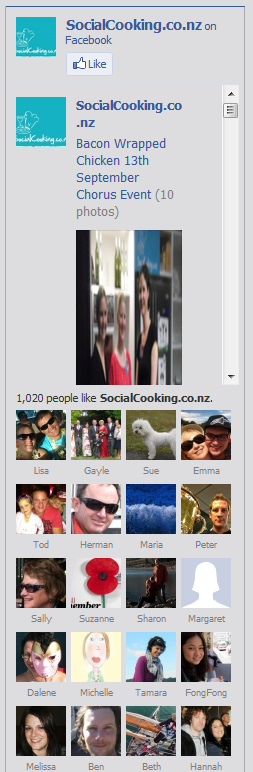

Fallera - Social Cooking
Human Factors Interface Design, Fall 2012

Related systems:
Logistics, feedback, organization:
Sharing:
Food specific sharing:
Other inspirational designs:
Selected inspirations:
A team of chefs in New Zealand provides a unique solution to the need for social cooking. The New Zealand Social Cooking Co. hosts evening classes where chefs demonstrate to a group/couple how to cook a particular style of food, and provide the space and resources for the guests to test out their own cooking skills. The website presents information about the classes and chefs, a calendar of events, videos of the chef demonstrations, recipes with pictures, and contact and location information. The website displays attractive images and colors and has clearly labeled tabs for each of the key pages (see Fig. 1). In addition, the recipes page has numerous pictures of dishes that look delicious (see Fig. 2). We could incorporate these aspects into our design in order to make our app more visually appealing, since this would make our app more enjoyable to use. However, navigation through the site was confusing at times. For example, the home page contains links to upcoming event pages that can only be accessed through the home or “look & book” pages. You must then click “back to events” to return to the events calendar, which is confusing if you were previously on the home page. In addition, there was inconsistency because some links open new tabs, whereas most load the new page on the currently opened tab. In our project, we could improve upon this design by ensuring clear, easy navigation and consistency. Finally, the side bar on each page showing Facebook likes was distracting (see Fig. 3).
Figure 1: Visually appealing background image on home page, as well as clearly labeled tabs for individual pages.
Figure 2: Recipes illustrated with mouth-watering images.
Figure 3: Distracting sidebar showing Facebook likes.
Epicurious is a food resource for individuals interested in expanding their cooking repertoire and honing their cooking skills. Epicurious’ slogan is “for people who love to eat”, although people who do not also love to cook will not find the website terribly helpful. The website allows users to search for recipes from the archives of fancy food cookbooks and recipes such as Gourmet and bon appetit, as well as recipes edited by epicurious. Users can search for recipes or menus in a variety of categories, such as holidays, healthy, or quick eats. The website also provides guides and videos teaching users how to employ a variety of cooking techniques. The site is organized such that users can easily use one or both of these features--navigating to each of the recipes and techniques sections is easy and clear to the user. For the casual browser looking for somewhere to start, the website has a “recipe of the day” feature and recipe slideshows. Users can also create an account and mark recipes they like for future reference. All of these features, and others, are accessible from the home page; however, the site is compartmentalized clearly so the user is able to find what he or she is interested in. Someone just starting cooking might find the volume of information overwhelming, but for a seasoned cook the page is easy to navigate and provides sufficient variety for anyone to find something interesting to make. One of the most helpful features of the website is the comments that individuals make on each recipe. Many of the recipes are from gourmet sources and thus are complicated or call for obscure ingredients. By reading and incorporating comments from other users, an individual can modify recipes to suit his or her cooking style and skill level. One disadvantage to the way the reviews are presented is the difficulty in sorting through the long list (sometimes including several hundred reviews) to find relevant reviews for particular issues or sources of confusion. In general, the website is very aesthetic and well-structured for recipe discovering and technique learning, both of which may be applicable for our design and our users.
Figure 4: A search page on epicurious.com. Different search categories are clear on the sidebar, and recipes are listed with title, source, rating, and photo on the main part of the page.
Figure 5: A recipe, including ingredients, preparation instructions, dietary considerations, technique videos, reviews, and description.
Supercook is a recipe sharing website that reimagines the process of finding the right recipe. Instead of defaulting to the usual recipe title search, Supercook searches by what ingredients you have. The homepage is straightforward and clear to use, with the ingredients search bar prominent in the top left and the returned results displayed just to the right without any page navigation (Figure 6). You can emphasize ingredients, exclude ingredients, exclude whole food groups (for dietary restrictions and allergies), and even search by key terms in the recipe title if desired. A word cloud is generated for each search with the most common ingredients associated with the results, simplifying adding relevant ingredients. Whenever a change is made in the search terms, the results are returned instantly on the same page, making the act of searching for a recipe more fluid since you don’t have to navigate back and forth between the search page and the results page. The results are sorted by whether you have all of the ingredients and the relevance of the recipe if you emphasized any ingredients. Supercook has a lot of features that make finding a recipe you can cook quick and easy, which is particularly relevant to our project. The big advantage to this design is that only the most pertinent information is displayed, condensing the whole user interaction into one dynamic page.

Figure 6: Homepage of Supercook. The search is clear to use and the results are returned on the same page, making recipe searching a more fluid process.
Figure 7: search results on the homepage of Supercook.com. The results clearly indicate whether you have all the ingredients, what the recipe is, displays an appetizing picture, and has a clear save button.
Surveymonkey is a site that enables people to collect feedback from large groups of people. There are various formats that answers can be collected in. The website we are looking to design is one that can match people on many criteria, seeing where people overlap. Long answers are not especially necessary, and we want to make it easy for people to create their own options to be added to the matching criteria.
This is what a grid we might take for inspiration looks like.
Figure 8. This feedback format allows people to assign points to flavors. Survey monkey then outputs these points in answers in a grid.
Another format that I can see being very valuable is the multiple-choice yes or no grid.
Figure. 9. Users can put in their availability in a very easy format.
One drawback to this method of input is that every single box must be checked. Even better would be the ability to hold down on the mouse and drag over a range of boxes, or select an area like when cropping an image in photo editing software. Even better would be if this could sync to your outlook or Google calendar and facebook calendar to stay current.
Another format that would be good would be one that allows people to easily give feedback on their meals in terms of a few basic metrics. The answers can be in word format or numbers.
Figure 10. The database will be able to collect data on people’s experiences.
In addition to being easy-to-use, this format allows people to compare the meals they’ve had throughout the month.
Collecting feedback and matching people are key for making this a service that can match well and help them figure out what to make. In order to appeal to people and make collecting information easier, we will adjust the aesthetics of the survey and make things like availability more variable, breaking up the day into smaller chunks. We will also work on an interface that makes it easier for people to input the ingredients they have available and the amounts of each ingredient, with the remaining time until expiration. Survey Monkey is a good start for collecting a lot of information in one screen, and we will go beyond what Survey Monkey allows in terms of ease of use and aesthetics.